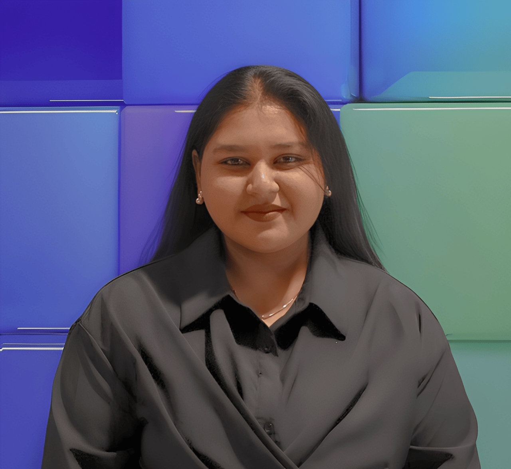

about me
hey! i'm sadhana — a junior at rutgers university's school of arts & sciences honors college, double majoring in computer science and data science with minors in statistics and cognitive science.
i spend most of my time doing ai/ml research, building models, and thinking about how technology is reshaping the world around us. right now i'm working on my senior thesis — building multi-agent llm systems that can catch and correct their own hallucinations. basically teaching computers to argue with each other productively.
i'm also a co-founder and president of sheтek @ rutgers, a chapter i built from scratch to 50+ members. bridging the gap between women in tech and actual industry opportunity is something i care about a lot.
outside of research and work, i love connecting with people doing interesting things, tutoring cs + math, and documenting everything i'm learning. always down to talk if you're building something cool.
